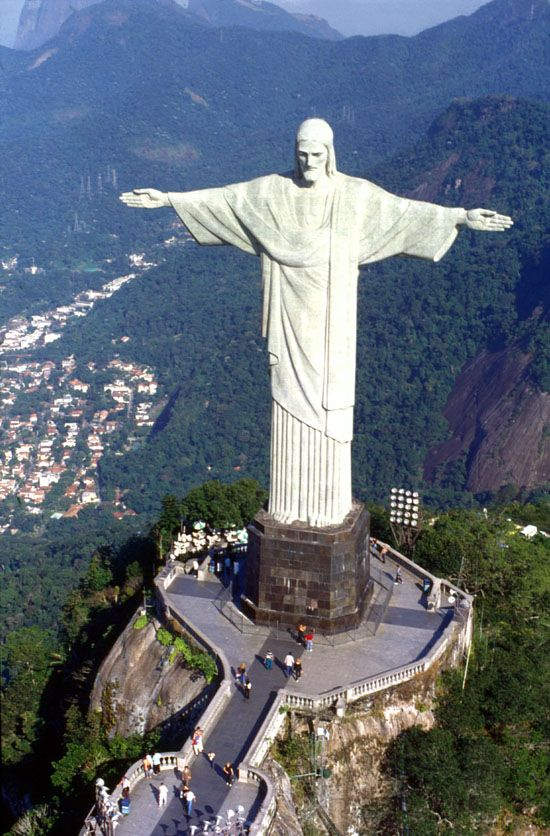

|  | Christ the Redeemer is an Art Deco statue of Jesus Christ in Rio de Janeiro, Brazil, created by French sculptor Paul Landowski and built by the Brazilian engineer Heitor da Silva Costa, in collaboration with the French engineer Albert Caquot. Romanian sculptor Gheorghe Leonida fashioned the face. The statue is 30 metres (98 ft) tall, not including its 8-metre (26 ft) pedestal, and its arms stretch 28 metres (92 ft) wide. The statue weighs 635 metric tons (625 long, 700 short tons), and is located at the peak of the 700-metre (2,300 ft) Corcovado mountain in the Tijuca Forest National Park overlooking the city of Rio. A symbol of Christianity across the world, the statue has also become a cultural icon of both Rio de Janeiro and Brazil, and is listed as one of the New Seven Wonders of the World. It is made of reinforced concrete and soapstone, and was constructed between 1922 and 1931. |